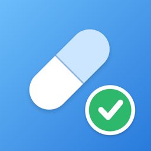

飲み忘れをなくして、あなたの健康をサポートする服薬管理アプリです。
Q. 通知が来ません。
iPhoneの「設定」→「通知」→「おくすリズム」で通知が許可されているか確認してください。アプリの「メニュー」→「通知設定」で、各時間帯の通知がオンになっているかも確認してください。
Q. 飲み合わせチェックに自分の薬が出てきません。
現在は、よく処方される成分を中心に収録しています。収録されていない薬は名前だけで登録でき、通知や記録は利用できます。飲み合わせは薬剤師にご確認ください。
Q. データの出典は？
独立行政法人 医薬品医療機器総合機構（PMDA）が公開する医療用医薬品の添付文書です。アプリ内の「メニュー」→「データの出典・ご利用上の注意」から、成分ごとの添付文書ページを開けます。
本アプリは診断・治療を行うものではありません。お薬の変更・中止は必ず医師・薬剤師に相談してください。